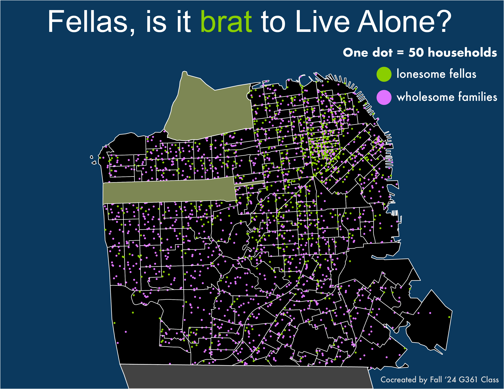

Fellas, is it brat to Live Alone?
Brat Summer was a cultural phenomenon in 2024. College undergraduate students were well acquainted with the trend, and this was no exception at Penn State. So, when I set out to make a map about the living situation of silicon valley 'tech bros' in front of my cartography class in fall 2024, it should come as no surprise that this morphed into a 'brat' project.
How did we get here? Let's take a step back.A the end of every semester, I do a "Bob Ross" mapping day where I make a map live with the help of my students. This was inspired by my undergraduate education at UW-Madison where my mentor Daniel Huffman gave a guest lecture in my cartography class. The guest lecture was just Daniel making a map from scratch. It was eye-opening to see someone go through the design process live. I do the same for my students to show them a different approach for designing besides their own.
I arrived at the Bob Ross lecture prepared to make a map looking at whether there were more households occupied by single, male-identifying individuals versus families. As I began to explore and visualize the data, the brat theme began to take root. We leaned into the theme with the Arial typeface and brat green.
The resulting map was my first dot density map that reveals some interesting patterns. You can see that there are some clear clusters of 'tech bros' in Central and Northeast San Francisco. Southern San Francisco is predominantly families.
Created using Illustrator
